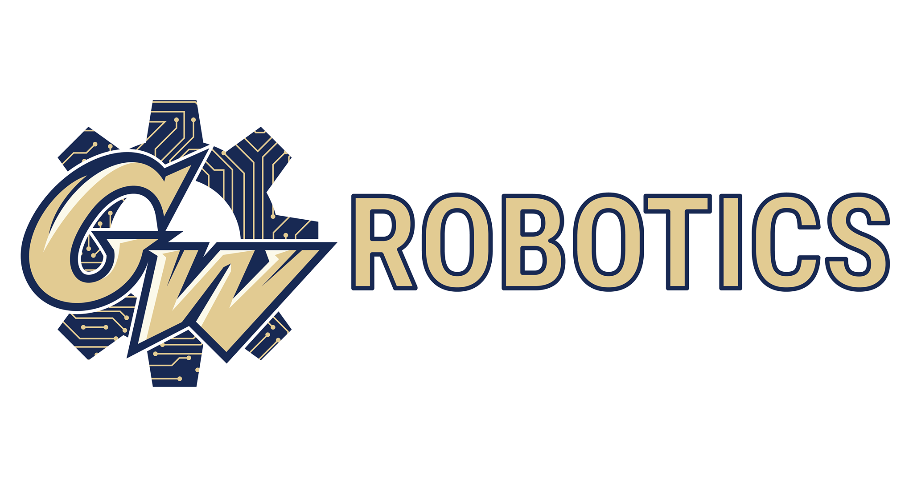
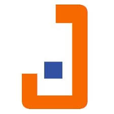

My name is Lily Schwarz, I'm 20 years old, and I'm from a small town in Washington state. As a current student at the George Washington University in Washington, DC, I have the incredible opportunity tostudy computer science and economics in an environment that will push me to make a positive impact on the world around me.
I currently serve as the Technology Director and Treasurer of Women in Computer Science at GW. In order to uphold these positions I regularly update our website and social media presence, as well as organize budgets for the organization.
I am working with another student to develop the computer science department's website using Drupal. I also maintain the department's social media department's social media presence by posting on Facebook, Instagram, and Twitter.

As a member of Robotics, I am in the process of working with the control systems team to program a robot in Python to perform certain tasks underwater.

I collaborated with a team of five other freshmen to build and program a robot to autonomously go through a maze and back to the original starting point. We used leJOS ev3 and implemented color and touch sensors to enable the robot to navigate through the maze.
As a mentor for the School of Engineering and Applied Science's Student Peer Advisory Network, I collaboratively work with a team of approximately 30 engineering students to improve the freshman experience. I am personally in charge of 8 Freshmen each year to make sure they have a successful first year.
As the treasurer of Somers Residence Hall, I was in charge of budgetting and planning events that would foster a community within the residence hall in a way that maximized available funds.
I worked with a team of approximately 20 other students to research how to implement a water filtration system to improve water accessibility in rural India.
I was one of 16 other freshmen women selected from a pool of over 1000 applicants to participate on the Globalization, Economics, and Business cohort of the Women's Environment. I had the opportunity to network with notable women in DC including but not limited to national ambassadors and Presidential speech writers.
Alpha Omega Epsilon is a sorority that promotes professionalism within STEM fields. As the Risk Management Chair, I help foster a safe environment for all 45 members at related events.
Alternative Breaks is a community service organization. Through this program, I've gone to New Orleans to work with Habitat for Humanity to help aid in Hurricane Katrina disaster relief. This year, I will go to Atlanta, Georgia to aid in Refugee Resettlement
Over the summer, I studied abroad in Seoul, South Korea alongside over 1,200 international students. I took courses in Microeconomic Theory and Biology while immersing myself in Korean culture.

As a junior in high school, I studied abroad in Taipei, Taiwan through Rotary Youth Exchange. I studied Mandarin Chinese while living with three different Taiwanese host families.

As a senior in high school I dedicated my afternoons to being a teaching assistant in a middle school classroom. I noticed their lack of updated technology, so I wrote a grant for $4,000 worth of iPads, cameras, and software.
As a sophomore in high school, I interned at a local tech startup called "PosterVents", an event app that displays event posters in areas all across the United States. I was the content and social media manager of the iPhone app.